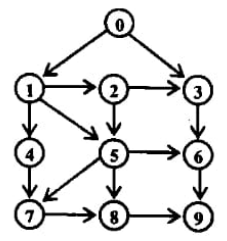

Two states of vertex: initial and visited
Initially all vertices are at initial state, when vertex will be popped from stack its state will
change to visited.
•Procedure:
Initially stack is empty, and all vertices are in initial state:
1. Push starting vertex on the stack
2. Pop a vertex from stack
3. If popped vertex is in initial state, visit it and change its state to visited . Push all
unvisited vertices adjacent to the popped vertex.
4. Repeat steps 2 &3 until stack is empty.
There is no restriction on the order in which the successors of a vertex are visited and so we
can push the successor of a vertex in any order.
